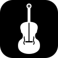

Violin Practice RoomA plan built from your practice log, your pieces and what the ear drills show you find hard. Work down the list; each step opens the tool it needs.
Tap a string to hear its reference pitch, then match it. If your browser allows the microphone, the live tuner shows how many cents sharp or flat you are.
Practise slowly and cleanly, then let the speed trainer raise the tempo a few clicks at a time.
Play a scale over a sustained tonic. Out-of-tune notes beat against the drone, so you hear intonation instead of guessing it.
Every note in first position, with the finger that plays it. Pick a key to see its scale and finger pattern on each string. Tap any note to hear it.
A spot on the fingerboard lights up and the names hide. Say which note it is. With a scale picked, the quiz sticks to that scale.
Pick a scale and play it, one note per bow. The trainer listens to each note, marks how many cents sharp or flat it was, and tells you which fingers to move.
Photograph a page of music and an AI writes it out as notes the app can draw and play. Three quick steps, once per device.
Keeps your pieces, and if you like your keys, on every device you sign in on.
With "Keep my keys in Google Drive" on, your keys go to a hidden app folder in your Drive that only this app can see, and any device where you sign in to Google gets them. Anyone who gets into your Google account could read them too, so set a spending limit on each key.
When you tap Save, Safari may offer to save the key to iCloud Keychain (Chrome to its own password manager). If no offer appears, add it yourself in the Passwords app under violin.daiyip.com.
Drive sync needs the OAuth client ID from this app's Google Cloud project (see the README). It isn't a secret.
Track a piece's tempo before its music is here. Add the music later and it keeps its progress.
Reading with Claude.
A misread note is usually one letter to fix: c is the C in the middle of the staff, C an octave lower, ^ sharp, _ flat, = natural, and a number after a note sets its length.
Good intonation starts in the ear. Learn to recognise intervals, and train yourself to hear when a note is a few cents off.
You hear a reference note, then a second note. Say whether the second one is sharp, flat or exactly the same. Get it right and the gap shrinks. Get it wrong and it widens, so the drill settles at the smallest difference you can reliably hear.
Record a scale or passage with your phone's voice recorder, then open it here. You get a pitch trace showing how far each note sits from true pitch, a per-note summary, and slow-down playback with a loop.
| Note | Average | Flat ← → Sharp | Verdict |
|---|
Set the tempo you meant to play and how many notes fall on each beat. The check finds where each note starts and compares it with a steady beat.
Prop your phone two or three metres in front of you so your head, both arms and the violin are in the picture. Record 20 to 30 seconds of slow scales, then open the video here. Pose tracking runs on your device and nothing is uploaded.
Time today's session, then write down what you worked on and how it went.